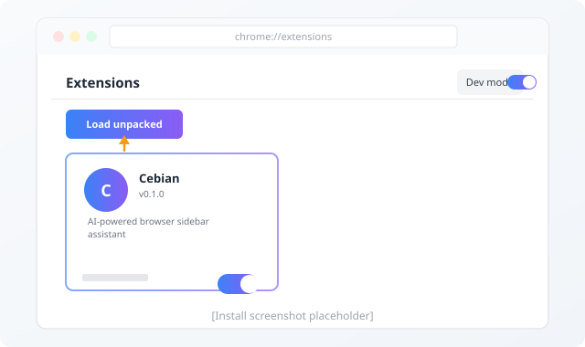

Download the latest release
Go to the GitHub Releases page and download the cebian-chrome.zip file from the latest release.
Unzip the file
Extract the downloaded .zip file to a folder on your computer. Remember where you put it — Chrome needs to access this folder.
Open Chrome Extensions
Navigate to chrome://extensions in your Chrome browser, or open the Chrome menu → More tools → Extensions.
chrome://extensions
Enable Developer Mode
Toggle the Developer mode switch in the top-right corner of the Extensions page. This unlocks the ability to install unpacked extensions.
Click "Load unpacked"
Click the Load unpacked button that appears after enabling Developer mode, then select the folder you extracted in step 2.

Open the side panel
Cebian is now installed! Click the Cebian icon in the Chrome toolbar, or use the keyboard shortcut to open the side panel. Configure your first AI provider in Settings to get started.
When a new release is available, download the new zip, extract it to the same folder (overwriting the old files), and click the reload button on the Cebian card in chrome://extensions.
System requirements
- Google Chrome 116 or later (Side Panel API required)
- macOS, Windows, or Linux
- An API key or OAuth subscription for at least one AI provider
After installing, learn how to use all features.
Explore Features